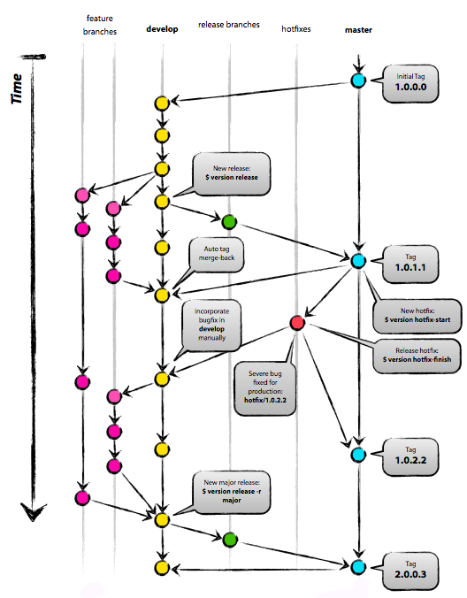

Increments version number based on git tags.
version.py file to your develop and build machines. cp version.py /usr/local/bin/versionversion and read the command line usage help.version release to create a new release from the develop to the master branch, pushing the changes to origin.
The initial version must be provided in the repository master branch before using the version script. Its format defines how the next versions are calculated:
major.minor) will produce a 3 digit version nextmajor.minor.patch) will continue the 3 digit schememajor.minor.patch.build) will use the last field to keep a global counter of releasesUsing the release command will merge the current develop into master, tagging it with the next patch version number and merging that tag back to develop.
The hotfix-start command creates a temporary branch from master where commits can be made and hotfix-finish will merge those changes back to master and tag it with the next patch version number. Hotfix commits can be manually merged into develop if needed.
Configure your git repository URL and branch to build, then click advanced and set:
Otherwise you'll get the wrong version number.
echo CURRENT_VERSION=$(python "/usr/local/bin/version.py" show) > envvarsenvvarsThe CURRENT_VERSION variable will then be available to use in your build environment, containing the version obtained from the most recent git tag.